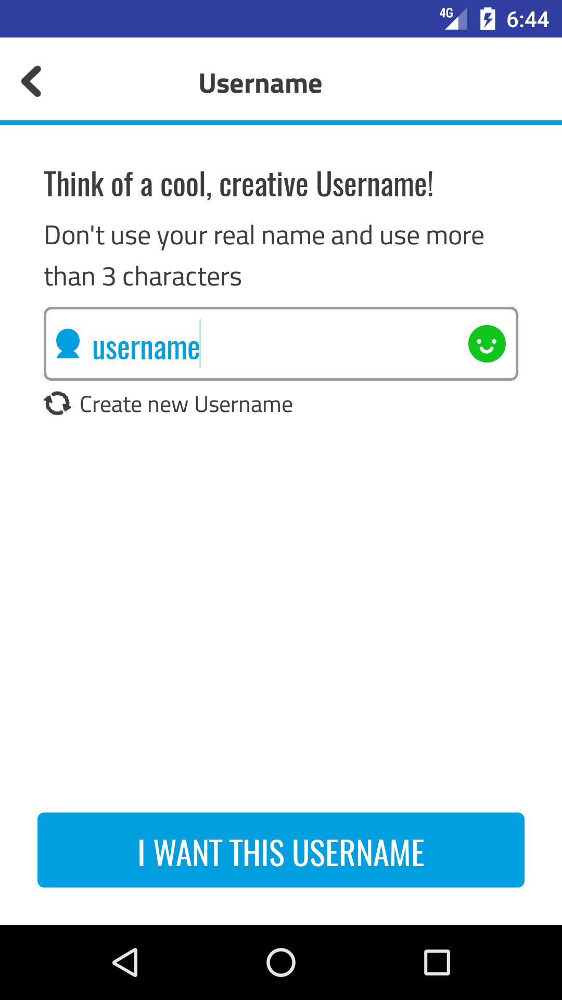

Register username input¶
Summary: Provides default UI for selecting a username.
Includes functionality that allows the input of usernames as well as validation against rules that can be setup server-side, such as minimum and maximum username length, regex rules, etc.
{kind=link}
Basic setup¶
In order to add it to an Activity, first we must add it to our Fragment or Activity XML layout.
<?xml version="1.0" encoding="utf-8"?>
<android.support.design.widget.CoordinatorLayout
tools:context=".activities.MyIntroActivity">
<tv.superawesome.pj.ui.registerusername.views.RegisterUsernameView
android:id="@+id/register_username"
android:layout_width="match_parent"
android:layout_height="match_parent"/>
</android.support.design.widget.CoordinatorLayout>
Note
Notice the actual instance is called RegisterUsernameView
Once its taken its place in our layout, we can hook it up in code:
class MyFeedActivity: AppCompatActivity() {
override fun onCreate(savedInstanceState: Bundle?) {
super.onCreate(savedInstanceState)
register_username.setSkin(RegisterUsernameSkin())
register_username.bindTo(context.application.store)
}
override fun onDestroy() {
register_username.unbindFrom(context.application.store)
super.onDestroy()
}
}
And that’s it!
Note
Notice we have used Kotlin’s Kapt extension in order to have direct access to the view via its ID. Good alternatives are Jake Wharton’s ButterKnife library or calling findViewById directly.
Delegate¶
Most of the functionality that the view performs is executed internally and is not exposed to the outside. However there are cases where it’s not wise to keep certain actions internal so as to allow for more flexibility.
To this extent, the view provides a Delegate interface that it uses to talk to the outside world. Any class (activity, fragment, etc) can implement it.
interface IRegisterUsernameDelegate {
fun onInputUpdated(input: String, isValid: Boolean)
}
To assign the view’s delegate to some object that implements it:
register_username.setDelegate(some_object)
Furthermore, the view can have a soft keyboard hook to notify when the “Done” button has been clicked.
register_username.setKeyboardHook(object: View.OnClickListener {
fun onClick(v: View?) {
// perform action on soft keyboard "Done" click
}
})
Note
Notice anything that implements View.OnClickListener can play the role of keyboard hook. To ease this, the RegisterButton and LoginButton views also implement this interface.
Skinning¶
interface IRegisterUsernameSkin : ISkin {
val layout: Int
val usernameInput: Int
}